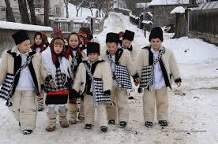
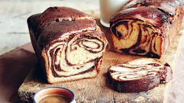
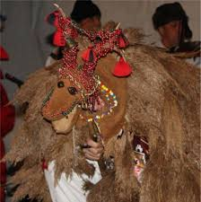

Colindele
Unul dintre cele mai iubite obiceiuri de Crăciun în România este colindatul. Colindătorii merg din casă în casă cântând colinde tradiționale, vestind Nașterea Mântuitorului. De obicei, colindele sunt însoțite de daruri, cum ar fi nuci, mere sau bani.
Bradul de Crăciun

Bradul de Crăciun este un simbol important al sărbătorii. În România, se obişnuiește ca bradul să fie decorat cu globuri, beteală, luminițe și îngerași. Multe familii au obiceiul de a împodobi bradul în Ajunul Crăciunului.
Prăjiturile tradiționale
Un alt obicei de Crăciun în România este prepararea prăjiturilor tradiționale, cum ar fi cozonacii, care sunt făcuți cu umpluturi de nucă, mac sau cacao. Aceștia sunt adesea serviți la masa de Crăciun alături de alte bunătăți tradiționale.
Masa de Crăciun

Masa de Crăciun este un moment important pentru fiecare familie din România. În general, se pregătesc mâncăruri tradiționale, cum ar fi sarmale, piftie, salate, fripturi și, desigur, cozonaci și prăjituri. Toată familia se adună în jurul mesei pentru a sărbători Nașterea Domnului.
Capra de Crăciun
În anumite zone ale României, există obiceiul „Capra de Crăciun”. Colindătorii îmbrăcați în piei de animale și cu o mască de capră colindă pe la casele oamenilor, aducând veselie și noroc pentru anul ce urmează.